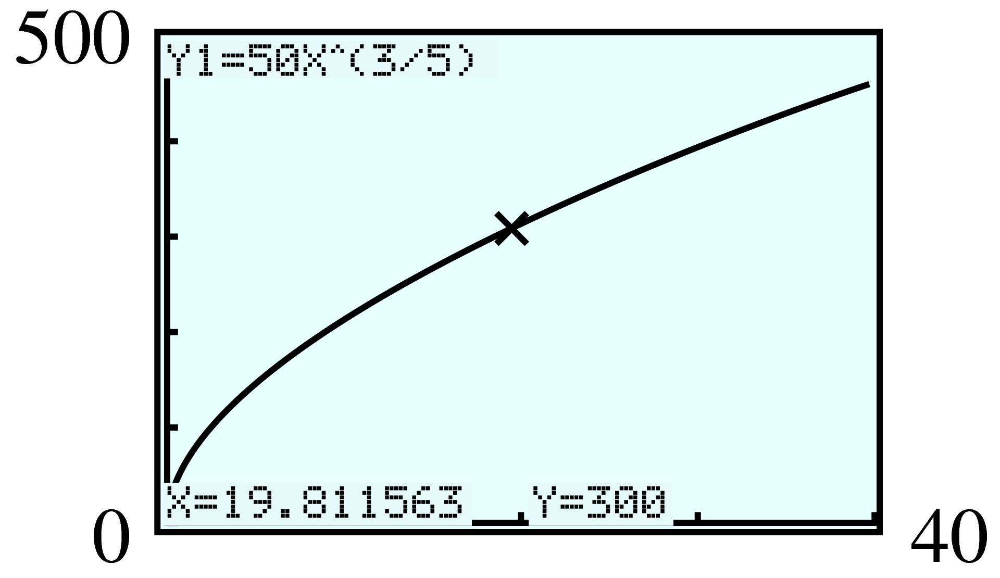
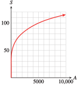
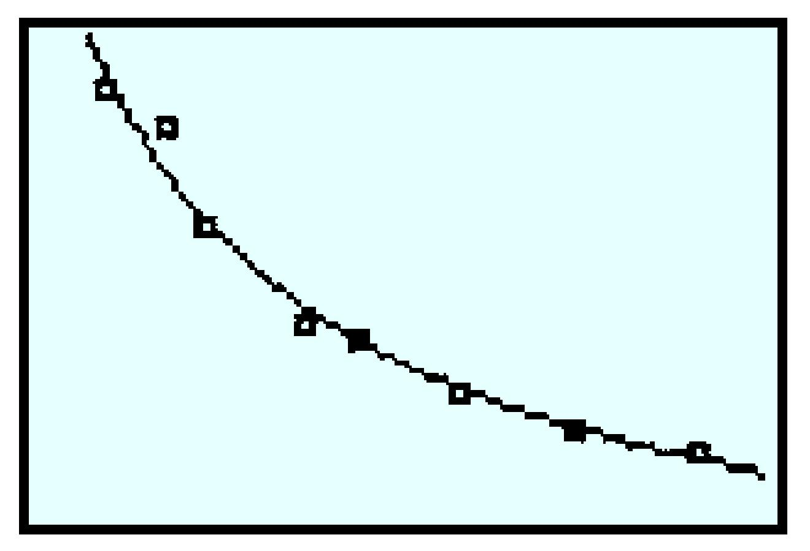

Exercises 5.8 Homework 3.4
¶For the problems in Homework 3.4, assume that all variables represent positive numbers.
Evaluate each power in Problems 1–4.
For Problems 5–8, write each power in radical form.
5.
\(x^{4/5} \)
\(b^{-5/6} \)
\((pq)^{-2/3} \)
\(\sqrt[5]{x^4} \)
\(\dfrac{1}{\sqrt[6]{b^5} } \)
\(\dfrac{1}{\sqrt[3]{(pq)^2}} \)
6.
\(y^{3/4} \)
\(a^{-2/7} \)
\((st)^{-3/5} \)
7.
\(3x^{0.4} \)
\(4z^{-4/3} \)
\(-2x^{0.25}y^{0.75} \)
\(3\sqrt[5]{x^2} \)
\(\dfrac{4}{\sqrt[3]{z^4}} \)
\(-2\sqrt[4]{xy^3} \)
8.
\(5y^{2/3} \)
\(6w^{-1.5} \)
\(-3x^{0.4}y^{0.6} \)
For Problems 9–12, write each expression with fractional exponents.
9.
\(\sqrt[3]{x^2} \)
\(2\sqrt[5]{ab^3} \)
\(\dfrac{-4m}{\sqrt[6]{p^7}} \)
\(x^{2/3} \)
\(2a^{1/5}b^{3/5} \)
\(-4m p^{-7/6} \)
10.
\(\sqrt{y^3} \)
\(6\sqrt[5]{(ab)^3} \)
\(\dfrac{-2n}{\sqrt[8]{q^{11}}} \)
11.
\(\sqrt[3]{(ab)^{2}} \)
\(\dfrac{8}{\sqrt[4]{x^3}} \)
\(\dfrac{R}{3\sqrt{TK^5}} \)
\((ab)^{2/3} \)
\(8x^{-3/4} \)
\(\dfrac{1}{3}RT^{-1/2}K^{-5/2} \)
12.
\(\sqrt[3]{ab^2} \)
\(\dfrac{5}{\sqrt[3]{y^2}} \)
\(\dfrac{S}{4\sqrt{VH^3}} \)
For Problems 13–16, evaluate each root without using a calculator.
13.
\(\sqrt[5]{32^3} \)
\(-\sqrt[3]{27^4} \)
\(\sqrt[4]{16y^{12}} \)
\(8 \)
\(-81 \)
\(2y^3 \)
14.
\(\sqrt[4]{16^5} \)
\(-\sqrt[3]{125^2} \)
\(\sqrt[5]{243x^{10}} \)
15.
\(-\sqrt{a^8b^{16}} \)
\(\sqrt[3]{8x^9y^{27}} \)
\(-\sqrt[4]{81a^8b^{12}} \)
\(-a^4 b^8 \)
\(2x^3y^9 \)
\(-3a^2 b^3 \)
16.
\(-\sqrt{a^{10} b^{36}} \)
\(\sqrt[3]{64x^6 y^{18}} \)
\(-\sqrt[5]{32x^{25}y^{5}} \)
For Problems 17–18, use a calculator to approximate each power or root to the nearest thousandth.
17.
\(12^{5/6} \)
\(\sqrt[3]{6^4} \)
\(37^{-2/3} \)
\(4.7^{2.3} \)
\(7.931\)
\(10.903\)
\(0.090\)
- \(\displaystyle 35.142\)
18.
\(20^{5/4} \)
\(\sqrt[5]{8^3} \)
\(128^{-3/4} \)
\(16.1^{0.29} \)
19.
During a flu epidemic in a small town, health officials estimate that the number of people infected \(t\) days after the first case was discovered is given by
-
Make a table of values for \(I (t)\) on the domain \(0\le t\le 20\text{.}\) What is the range of the function on that domain?
\(t\) \(5\) \(10\) \(15\) \(20\) \(I(t)\) \(\hphantom{00000} \) \(\hphantom{00000} \) \(\hphantom{00000} \) \(\hphantom{00000} \) How long will it be before \(300\) people are ill?
Graph the function \(I(t)\) and verify your answer to part (b) on your graph.
-
\(t\) \(5\) \(10\) \(15\) \(20\) \(I(t)\) \(131 \) \(199 \) \(254 \) \(302 \) Range: \([0, 302]\)
\(\approx 19.812\) or about \(20\) days
- 
20.
The research division of an advertising firm estimates that the number of people who have seen their ads \(t\) days after the campaign begins is given by the function
-
Make a table of values for \(N (t)\) on the domain \(0\le t\le 20\text{.}\) What is the range of the function on that domain?
\(t\) \(6\) \(10\) \(14\) \(20\) \(N(t)\) \(\hphantom{00000} \) \(\hphantom{00000} \) \(\hphantom{00000} \) \(\hphantom{00000} \) How long will it be before \(75,000\) people have seen the ads?
Graph the function \(N(t)\) and verify your answer to part (b) on your graph.
In Problems 21–22, graph each set of power functions in the suggested window and compare the graphs.
21.
\(y_1 = x,~~ y_2 = x^{5/4},~~ y_3 = x^{3/2},~~ y_4 = x^2,~~ y_5 = x^{5/2}\)
\({\text{Xmin}} = 0,~~~ {\text{Xmax}} = 6,~~~ {\text{Ymin}} = 0,~~~ {\text{Ymax}} = 10\)
All the graphs are increasing and concave up. For \(x \gt 1\text{,}\) each graph increases more quickly than the previous one.
22.
\(y_1 = x^{2/5},~~ y_2 = x^{1/2},~~ y_3 = x^{2/3},~~ y_4 = x^{3/4},~~ y_5 = x\)
\({\text{Xmin}} = 0,~~~ {\text{Xmax}} = 6,~~~ {\text{Ymin}} = 0,~~~ {\text{Ymax}} = 4\)
23.
The surface to volume ratio is important in studying how organisms grow and why animals of different sizes have different characteristics.
Write formulas for the volume, \(V\text{,}\) and the surface area, \(A\text{,}\) of a cube in terms of its length, \(L\text{.}\)
Express the length of the cube as a function of its volume. Express the length of the cube as a function of its surface area.
Express the surface area of the cube as a function of its volume.
Express the surface to volume ratio of a cube in terms of its length. What happens to the surface to volume ratio as \(L\) increases?
\(V = L^3\text{,}\) \(A = 6L^2\)
\(L=V^{1/3}\text{,}\) \(L=\left(\dfrac{A}{6} \right)^{1/2}\)
\(A=6V^{2/3}\)
\(\frac{A}{V}=\frac{6}{L} \text{.}\) As \(L\) increases, the surface-to-volume ratio decreases.
24.
Repeat Problem 23 for the volume and surface area of a sphere in terms of its radius, \(R\text{.}\)
Write formulas for the volume, \(V\text{,}\) and the surface area, \(A\text{,}\) of a sphere in terms of its radius, \(R\text{.}\)
Express the radius of the sphere as a function of its volume. Express the radius of the sphere as a function of its surface area.
Express the surface area of the sphere as a function of its volume.
Express the surface to volume ratio of a sphere in terms of its radius. What happens to the surface to volume ratio as \(R\) increases?
25.
A brewery wants to replace its old vats with larger ones. To estimate the cost of the new equipment, the accountant uses the \(0.6\) rule for industrial costs, which states that the cost of a new container is approximately \(N = Cr^{0.6}\text{,}\) where \(C\) is the cost of the old container and \(r\) is the ratio of the capacity of the new container to the old one.
If an old vat cost \(\$5000\text{,}\) graph \(N\) as a function of \(r\text{.}\)
How much should the accountant budget for a new vat that holds \(1.8\) times as much as the old one?

\(\$7114.32\)
26.
If a quantity of air expands without changing temperature, its pressure, in pounds per square inch, is given by \(P = kV^{-1.4}\text{,}\) where \(V\) is the volume of the air in cubic inches and \(k = 2.79\times 10^4\text{.}\)
Graph \(P\) as a function of \(V\text{.}\)
Find the air pressure of an air sample when its volume is \(50\) cubic inches.
27.
In the 1970s, Jared Diamond studied the number of bird species on small islands near New Guinea. He found that larger islands support a larger number of different species, according to the formula
where \(S\) is the number of species on an island of area \(A\) square kilometers. (Source: Chapman and Reiss, 1992)
-
Fill in the table.
\(A\) \(10\) \(100\) \(1000\) \(5000\) \(10,000\) \(S\) \(\hphantom{000000} \) \(\hphantom{000000} \) \(\hphantom{000000} \) \(\hphantom{000000} \) \(\hphantom{000000} \) Graph the function on the domain \(0\lt A\le 10,000\text{.}\)
How many species of birds would you expect to find on Manus Island, with an area of \(2100\) square kilometers? On Lavongai, which bird's area is \(1140\) square kilometers?
How large must an island be in order to support \(200\) different species of bird?
\(A\) \(10\) \(100\) \(1000\) \(5000\) \(10,000\) \(S\) \(25 \) \(42 \) \(69 \) \(98 \) \(115 \) - 
\(81\text{,}\) \(71\)
\(126,000\) sq km
28.
The drainage basin of a river channel is the area of land that contributes water to the river. The table gives the lengths in miles of some of the world’s largest rivers and the areas of their drainage basins in square miles. (Source: Leopold, Wolman, and Miller 1992)
Plot the data, using units of \(100,000\) on the horizontal axis and units of \(500\) on the vertical axis.
-
The length, \(L\text{,}\) of the channel is related to the area, \(A\text{,}\) of its drainage basin according to the formula
\begin{equation*} L = 1.05A^{0.58} \end{equation*}Graph this function on top of the data points.
The drainage basin for the Congo covers about \(1,600,000\) square miles. Estimate the length of the Congo River.
The Rio Grande is \(1700\) miles long. What is the area of its drainage basin?
| River | Area of drainage basin |
Length |
| Amazon | \(2,700,000\) | \(4300\) |
| Nile | \(1,400,000\) | \(4200\) |
| Mississippi | \(1,300,000\) | \(4100\) |
| Yangtze | \(580,000\) | \(2900\) |
| Volga | \(480,000\) | \(2300\) |
| St. Lawrence | \(460,000\) | \(1900\) |
| Ganges | \(440,000\) | \(1400\) |
| Orinoco | \(380,000\) | \(1400\) |
| Indus | \(360,000\) | \(2000\) |
| Danube | \(350,000\) | \(1800\) |
| Colorado | \(250,000\) | \(1700\) |
| Platte | \(72,000\) | \(800\) |
| Rhine | \(63,000\) | \(900\) |
| Seine | \(48,000\) | \(500\) |
| Delaware | \(12,000\) | \(200\) |
29.
The table at right shows the exponent, \(p\text{,}\) in the allometric equation
for some variables related to mammals. (Source: Chapman and Reiss, 1992)
| Variable | Exponent, \(p\) |
| Home range size | \(1.26\) |
| Lung volume | \(1.02\) |
| Brain mass | \(0.70\) |
| Respiration rate | \(-0.26\) |
-
Match each equation to one of the graphs shown in the figure.

Explain how the value of \(p\) in the allometric equation determines the shape of the graph. Consider the cases \(p\gt 1\text{,}\) \(0\lt p\lt 1\text{,}\) and \(p\lt 0\text{.}\)
Home range size: II, lung volume: III, brain mass: I, respiration rate: IV
If \(p\gt 1\text{,}\) the graph is increasing and concave up. If \(0\lt p\lt 1\text{,}\) the graph is increasing and concave down. If \(p\lt 0\text{,}\) the graph is decreasing and concave up.
30.
The average body mass of a dolphin is about \(140\) kilograms, twice the body mass of an average human male.
Using the allometric equations in Problem 29, calculate the ratio of the brain mass of a dolphin to that of a human.
A good-sized brown bear weighs about \(280\) kilograms, twice the weight of a dolphin. Calculate the ratio of the brain mass of a brown bear to that of a dolphin.
Use a ratio to compare the heartbeat frequencies of a dolphin and a human, and those of a brown bear and a dolphin. (See Example 4.6.18 of Section 4.)
31.
The gourd species Tricosanthes grows according to the formula \(L = ad^{2.2}\text{,}\) where \(L\) is its length and \(d\) is its width. The species Lagenaria has the growth law \(L = ad^{0.81}\text{.}\) (Source: Burton, 1998)
By comparing the exponents, predict which gourd grows into a long, thin shape, and which is relatively fatter. Which species is called the snake gourd, and which is the bottle gourd?
The snake gourd reaches a length of \(2\) meters (\(200\) cm), with a diameter of only \(4\) cm. Find the value of \(a\) in its growth law.
The bottle gourd is \(10\) cm long and \(7\) cm in diameter at maturity. Find the value of \(a\) in its growth law.
The giant bottle gourd grows to a length of \(23\) cm with a diameter of \(20\) cm. Does it grow according to the same law as standard bottle gourds?
Tricosanthes is the snake gourd and Lagenaria is the bottle gourd. Tricosanthes is thinner and Lagenaria is fatter.
\(a\approx 9.5\)
\(a\approx 2\)
Yes
32.
As a fiddler crab grows, one claw (called the chela) grows much faster than the rest of the body. The table shows the mass of the chela, \(C\text{,}\) versus the mass of the rest of the body, \(b\text{,}\) for a number of fiddler crabs. (Source: Burton, 1998)
| \(b\) | \(65\) | \(110\) | \(170\) | \(205\) | \(300\) | \(360\) | \(615\) |
| \(C\) | \(6\) | \(15\) | \(30\) | \(40\) | \(68\) | \(110\) | \(240\) |
Plot the data.
On the same axes, graph the function \(C = 0.007b^{1.63}\text{.}\) How well does the function fit the data?
Using the function in part (b), predict the chela mass of a fiddler crab if the rest of its body weighs \(400\) mg.
The chela from a fiddler crab weighs \(250\) mg. How much does the rest of its body weigh?
As the body mass of a fiddler crab doubles from \(100\) mg to \(200\) mg, by what factor does the mass of its chela increase? As the body mass doubles from \(200\) mg to \(400\) mg?
33.
The climate of a region has a great influence on the types of animals that can survive there. Extreme temperatures create difficult living conditions, so the diversity of wildlife decreases as the annual temperature range increases. Along the west coast of North America, the number of species of mammals, \(M\text{,}\) is approximately related to the temperature range, \(R\text{,}\) (in degrees Celsius) by the function \(M = f (R) = 433.8R^{-0.742}\text{.}\) (Source: Chapman and Reiss, 1992)
Graph the function for temperature ranges up to \(30\degree\)C.
How many species would you expect to find in a region where the temperature range is \(10\degree \)C? Label the corresponding point on your graph.
If \(50\) different species are found in a certain region, what temperature range would you expect the region to experience? Label the corresponding point on your graph.
Evaluate the function to find \(f (9)\text{,}\) \(f (10)\text{,}\) \(f (19)\text{,}\) and \(f (20)\text{.}\) What do these values represent? Calculate the change in the number of species as the temperature range increases from \(9\degree\)C to \(10\degree\)C and from \(19\degree\)C to \(20\degree\)C. Which \(1\degree\) increase results in a greater decrease in diversity? Explain your answer in terms of slopes on your graph.

\(\approx 78.5\) or about \(79\) species
\(18.4\degree\)C
\(f (9)\approx 85\text{,}\) \(f (10)\approx 79\text{,}\) \(f (19)\approx 49\text{,}\) \(f (20)\approx 47\text{;}\) from \(9\degree\)C to \(10\degree\)C has the greater decrease, corresponding to the steeper slope. If the temperature range is \(9\degree\)C, there will be approximately \(85\) species. If the temperature range is \(10\degree\)C, there will be approximately \(79\) species. If the temperature range is \(19\degree\)C, there will be approximately \(49\) species. If the temperature range is \(20\degree\)C, there will be approximately \(47\) species.
34.
A bicycle ergometer is used to measure the amount of power generated by a cyclist. The scatterplot shows how long an athlete was able to sustain various levels of power output. The curve is the graph of \(y = 500x^{-0.29}\text{,}\) which approximately models the data. (Source: Alexander, 1992)

In this graph, which variable is independent and which is dependent?
The athlete maintained \(650\) watts of power for \(40\) seconds. What power output does the equation predict for \(40\) seconds?
The athlete maintained \(300\) watts of power for \(10\) minutes. How long does the equation predict that power output can be maintained?
In 1979, a remarkable pedal-powered aircraft called the Gossamer Albatross was successfully flown across the English Channel. The flight took \(3\) hours. According to the equation, what level of power can be maintained for \(3\) hours?
The Gossamer Albatross needed \(250\) watts of power to keep it airborne. For how long can \(250\) watts be maintained according to the given equation?
35.
(((Unresolved xref, reference "balloons"; check spelling or use "provisional" attribute))) at the start of this chapter gives data for the pressure inside April and Tolu's balloon as a function of its diameter. As the diameter of the balloon increases from \(5\) cm to \(20\) cm, the pressure inside decreases. Can we find a function that describes this portion of the graph?
Pressure is the force per unit area exerted by the balloon on the air inside, or \(P = \dfrac{F}{A}\text{.}\) Because the balloon is spherical, its surface area, \(A\text{,}\) is given by \(A = \pi d^2\text{.}\) Because the force increases as the balloon expands, we will try a power function \(F = kd^p\text{,}\) where \(k\) and \(p\) are constants, and see if this fits the data. Combine the three equations, \(P = \dfrac{F}{A}\text{,}\) \(A = \pi d^2\text{,}\) and \(F = kd^p\text{,}\) to express \(P\) as a power function of \(d\text{.}\)
Use your calculator's power regression feature to find a power function that fits the data. Graph the function \(P = 211d^{-0.7}\) on top of the data. Do the data support the hypothesis that \(P\) is a power function of \(d\text{?}\)
What is the value of the exponent \(p\) in \(F = kd^p\text{?}\)
\(P=\dfrac{k}{\pi}d^{p-2} \)
-

The power function is a good fit on this interval.
\(1.3\)
36.
The table shows the total number of frequent flyer miles redeemed by customers through the given year. (Source: www.hotelnewsresource.com)
Plot the data, with \(t = 0\) in 1980. What type of function might model the data?
Graph the function \(f (t) = 3.13t^{2.33}\) on top of the data.
Evaluate \(f (5)\) and \(f (25)\text{.}\) What do those values mean in this context?
Use the regression equation to predict when the total number of miles redeemed will reach 10 trillion.
| Year | Cumulative miles redeemed (billions) |
| \(1982\) | \(14.8\) |
| \(1984\) | \(85.3\) |
| \(1986\) | \(215.4\) |
| \(1988\) | \(387.5\) |
| \(1990\) | \(641.3\) |
| \(1992\) | \(975.2\) |
| \(1994\) | \(1455.9\) |
| \(1996\) | \(1996\) |
| \(1998\) | \(2670.8\) |
| \(2000\) | \(3379.1\) |
| \(2002\) | \(4123.6\) |
(For part d): How many billions make a trillion?
For Problems 37–42, simplify by applying the laws of exponents. Write your answers with positive exponents only.
37.
\(4a^{6/5}a^{4/5} \)
\(9b^{4/3}b^{1/3}\)
\(4a^2\)
\(9b^{5/3} \)
38.
\((-2m^{2/3})^4 \)
\((-5n^{3/4})^3\)
39.
\(\dfrac{8w^{9/4}}{2w^{3/4}} \)
\(\dfrac{12z^{11/3}}{4z^{5/3}}\)
\(4w^{3/2} \)
\(3z^2 \)
40.
\((-3u^{5/3}) (5u^{-2/3}) \)
\((-2v^{7/8})(-3v^{-3/8})\)
41.
\(\dfrac{k^{3/4}}{2k} \)
\(\dfrac{4h^{2/3}}{3h}\)
\(\dfrac{1}{2k^{1/4}} \)
\(\dfrac{4}{3h^{1/3}} \)
42.
\(c^{-2/3}\left(\dfrac{2}{3}c^2 \right) \)
\(\dfrac{r^3}{4}(r^{-5/2}) \)
43.
The incubation time for a bird's egg is a function of the mass, \(m\text{,}\) of the egg, and has been experimentally determined as
where \(m\) is measured in grams and \(I\) is in days. (Source: Burton, 1998)
Calculate the incubation time (to the nearest day) for the wren, whose eggs weigh about \(2.5\) grams, and the greylag goose, whose eggs weigh \(46\) grams.
-
During incubation, birds' eggs lose water vapor through their porous shells. The rate of water loss from the egg is also a function of its mass, and it appears to follow the rule
\begin{equation*} W(m) = 0.015m^{0.742} \end{equation*}in grams per day. Combine the functions \(I(m)\) and \(W(m)\) to calculate the fraction of the initial egg mass that is lost during the entire incubation period.
Explain why your result shows that most eggs lose about \(18\%\) of their mass during incubation.
Wren: \(15\) days, greylag goose: \(28\) days
\(\dfrac{I(m)\cdot W(m)}{m}=0.18m^{-0.041} \)
Because \(m^{-0.041}\) is close to \(m^0\text{,}\) the fraction lost is close to \(0.18\text{.}\)
44.
The incubation time for birds' eggs is given by
where \(m\) is the weight of the egg in grams, and \(I\) is in days. (See Problem 43.) Before hatching, the eggs take in oxygen at the rate of
in milliliters per day. (Source: Burton, 1998)
Combine the functions \(I(m)\) and \(O(m)\) to calculate the total amount of oxygen taken in by the egg during its incubation.
Use your result from part (a) to explain why total oxygen consumption per unit mass is approximately inversely proportional to incubation time.
Predict the oxygen consumption per gram of a herring gull's eggs, given that their incubation time is \(26\) days. (The actual value is \(11\) milliliters per day.)
For Problems 45–50, solve. Round your answers to the nearest thousandth if necessary.
51.
Kepler's law gives a relation between the period, \(p\text{,}\) of a planet's revolution, in years, and its average distance, \(a\text{,}\) from the sun:
where \(K = 1.243\times 10^{-24}\text{,}\) \(a\) is measured in miles, and \(p\) is in years.
Solve Kepler's law for \(p\) as a function of \(a\text{.}\)
Find the period of Mars if its average distance from the sun is \(1.417\times 10^8\) miles.
\(p= 1.115\times 10^{-12} a^{3/2}\)
\(1.88\) years
52.
Refer to Kepler's law, \(p^2 = Ka^3\text{,}\) in Problem 51.
Solve Kepler's law for \(a\) as a function of \(p\text{.}\)
Find the distance from Venus to the sun if its period is \(0.615\) years.
53.
If \(f (x) = (3x - 4)^{3/2}\text{,}\) find \(x\) so that \(f (x) = 27\text{.}\)
\(\dfrac{13}{3} \)
54.
If \(g(x) = (6x - 2)^{5/3}\text{,}\) find \(x\) so that \(g(x) = 32\text{.}\)
55.
If \(S(x) = 12x^{-5/4}\text{,}\) find \(x\) so that \(S(x) = 20\text{.}\)
\(0.665 \)
56.
If \(T (x) = 9x^{-6/5}\text{,}\) find \(x\) so that \(T (x) = 15\text{.}\)
For Problems 57–64, use the distributive law to find the product.
57.
\(2x^{1/2}(x-x^{1/2}) \)
\(2x^{3/2} - 2x\)
58.
\(x^{1/3} (2x^{2/3} - x^{1/3})\)
59.
\(\dfrac{1}{2}y^{-1/3}(y^{2/3}+3y^{-5/6}) \)
\(\dfrac{1}{2}y^{1/3}+\dfrac{3}{2}y^{-7/6} \)
60.
\(3y^{-3/8}\left(\dfrac{1}{4}y^{-1/4} + y^{3/4} \right)\)
61.
\((2x^{1/4} + 1) (x^{1/4} - 1) \)
\(2x^{1/2} - x^{1/4} - 1 \)
62.
\((2x^{1/3} - 1) (x^{1/3} + 1)\)
63.
\((a^{3/4}-2)^2 \)
\(a^{3/2}-4a^{3/4}+4 \)
64.
\((a^{2/3}+3)^2\)
For Problems 65–70, factor out the smallest power from each expression. Write your answers with positive exponents only.
65.
\(x^{3/2} + x = x(~~\text{?}~~)\)
\(x(x^{1/2} + 1)\)
66.
\(y - y^{2/3} = y^{2/3}(~~\text{?}~~)\)
67.
\(y^{3/4} - y^{-1/4} = y^{-1/4}(~~\text{?}~~)\)
\(\dfrac{y-1}{y^{1/4}} \)
68.
\(x^{-3/2} + x^{-1/2} = x^{-3/2}(~~\text{?}~~)\)
69.
\(a^{1/3} + 3 - a^{-1/3} = a^{-1/3}(~~\text{?}~~)\)
\(\dfrac{a^{2/3}+a^{1/3}-1}{a^{1/3}} \)
70.
\(3b - b^{3/4} + 4b^{-3/4} = b^{-3/4}(~~\text{?}~~)\)